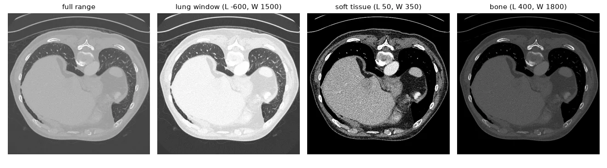
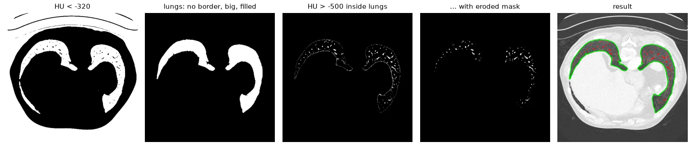
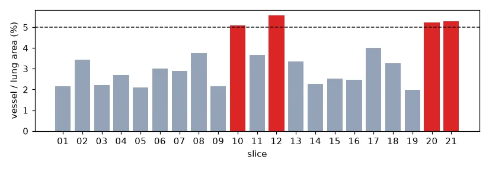
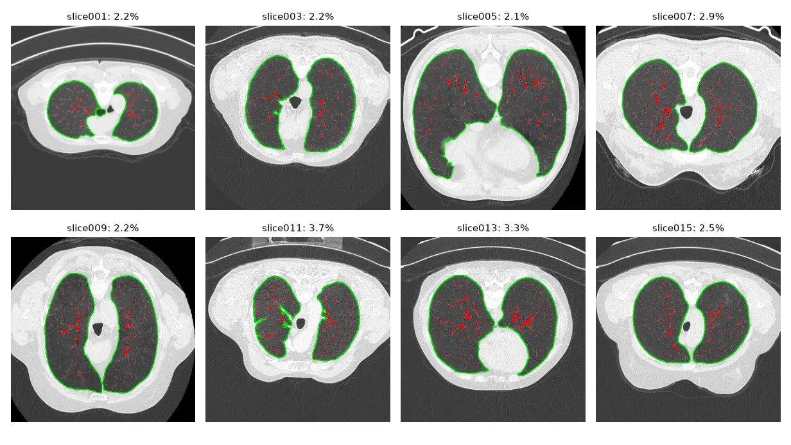

Not a medical tool
This is an image-processing exercise, not a diagnostic method. The "vessel to lung ratio" below is a toy criterion chosen for the lab.
Computed tomography in two paragraphs#
A CT scanner sends X-rays through the body from many angles and reconstructs, slice by slice, how much each small volume absorbs them. The result is not brightness in arbitrary units but a physical quantity on an absolute scale, the Hounsfield unit (HU): air is −1000 HU, water 0 HU, soft tissue about +20 to +80, bone +400 to +1000 and more. Lungs, full of air, sit around −900 to −500 HU; blood vessels inside them around +40.
Scans are stored in medical formats (DICOM, NIfTI) that also carry the physical size of a pixel, so areas can be measured in mm². The nibabel library reads NIfTI:
def load_slice(path):
scan = nib.load(str(path))
hu = np.flip(scan.get_fdata(), axis=1).T # Hounsfield units, radiological orientation
pix_mm = scan.header["pixdim"][1:3] # pixel size (mm) along the two image axes
return hu, pix_mm
hu, pix_mm = load_slice(U.path("ct/slice017.nii.gz"))
print(hu.shape, hu.dtype, f"HU range [{hu.min():.0f}, {hu.max():.0f}]", "pixel (mm):", pix_mm)
(512, 512) float64 HU range [-1024, 1554] pixel (mm): [0.76171875 0.76171875]
The array is float64, from −1024 to 1554: it cannot be shown "as is" on a 0–255 screen.
Windowing#
Radiologists display a range of HU chosen for the tissue they study: a window of width \(W\) centred on a level \(L\), mapped linearly to 0–255 and clipped outside. It is the dynamic expansion of lesson 04, in physical units:
| Region | Level | Width |
|---|---|---|
| Lungs | −600 | 1500 |
| Soft tissue | 50 | 350 |
| Brain | 40 | 80 |
| Bone | 400 | 1800 |
def window(hu, level, width):
"""Map [level - width/2, level + width/2] HU to [0, 255]; clip everything else."""
lo, hi = level - width / 2, level + width / 2
return np.round(255 * (np.clip(hu, lo, hi) - lo) / (hi - lo)).astype(np.uint8)
lung_view = window(hu, level=-600, width=1500)
soft_tissue = window(hu, level=50, width=350)
bone = window(hu, level=400, width=1800)

Segmenting the lungs#
The plan, one idea per line:
- Air is everything below about −320 HU — but that includes the air around the patient.
- The outside air touches the image border; the lungs don't. Label the connected components (lesson 09) and drop those that touch the border, and the tiny ones (bowel gas, noise).
- The vessels inside the lungs are not air, so they are holes in the mask. Find the outer contour of each lung and fill it.
def segment_lungs(hu, air_hu=-320, min_area_px=2000):
air = (hu < air_hu).astype(np.uint8) # air and lungs are both below ~-320 HU
# the air *around* the patient touches the image border: remove it
n, labels, stats, _ = cv2.connectedComponentsWithStats(air, connectivity=4)
border = set(np.unique(np.r_[labels[0], labels[-1], labels[:, 0], labels[:, -1]]))
keep = [i for i in range(1, n) if i not in border and stats[i, cv2.CC_STAT_AREA] >= min_area_px]
candidates = np.isin(labels, keep).astype(np.uint8) * 255
# vessels are *not* air, so they are holes in the candidates: fill each outer contour
contours, _ = cv2.findContours(candidates, cv2.RETR_EXTERNAL, cv2.CHAIN_APPROX_NONE)
mask = np.zeros_like(candidates)
cv2.drawContours(mask, contours, -1, 255, thickness=cv2.FILLED)
return mask, contours
My lab version selected contours by length and then took "the 2nd to 4th largest" (to skip the body outline). It worked on most slices but depended on the order of the contours. Removing everything that touches the border expresses the intent directly and works on all 21 slices — including those where the scanner padded the image with −8192 HU outside the field of view.
Segmenting the vessels#
Inside the lungs, a vessel is a pixel above −500 HU. But the lung wall is also above −500 HU, and the filled mask includes it. Eroding the mask a few pixels first keeps only the inside:
def segment_vessels(hu, lung_mask, vessel_hu=-500, erode_iter=3):
# erode the lung mask so the dense lung wall is not counted as a vessel
inner = cv2.erode(lung_mask, np.ones((3, 3), np.uint8), iterations=erode_iter)
return ((hu > vessel_hu) & (inner > 0)).astype(np.uint8) * 255
def areas_mm2(mask, pix_mm):
return np.count_nonzero(mask) * pix_mm[0] * pix_mm[1]

lungs 153.2 cm², vessels 6.1 cm², ratio 0.040
Screening all the patients#
results = []
for path in sorted(glob.glob(str(U.path("ct/*.nii.gz")))):
hu, pix_mm = load_slice(path)
lungs, _ = segment_lungs(hu)
vessels = segment_vessels(hu, lungs)
ratio = areas_mm2(vessels, pix_mm) / areas_mm2(lungs, pix_mm)
results.append((Path(path).name.split(".")[0], ratio, hu, lungs, vessels))
for name, ratio, *_ in results:
flag = " <- suspicious (>= 5%)" if ratio >= 0.05 else ""
print(f"{name}: vessel/lung = {100 * ratio:4.1f}%{flag}")
Sort your file lists
os.listdir and glob return files in an arbitrary order. In my lab report I numbered patients by their position in the list and then reloaded slice{i+1} — so the flagged "patients" were not the ones whose ratios I had computed. sorted(glob.glob(...)) and keeping the name with the result avoid that.


Limitations. The trachea and main bronchi are air too, and in a few slices they are counted in the lung area. A threshold of −500 HU also catches any dense tissue (scars, consolidations), not only vessels. Real pipelines work in 3-D (the airway is one connected tube across slices) and increasingly with neural networks — but they still start with Hounsfield windows and connected components.
Exercises#
- Remove the trachea: it is the round air component closest to the image centre in the upper slices. Add a circularity test, \(4\pi A / P^2 > 0.7\), with
cv2.contourAreaandcv2.arcLength. - Save the lung and vessel masks of every slice as PNG files next to the windowed image, for a radiologist to review.
- Separate the left and right lung (the two largest components) and report the ratio for each one.